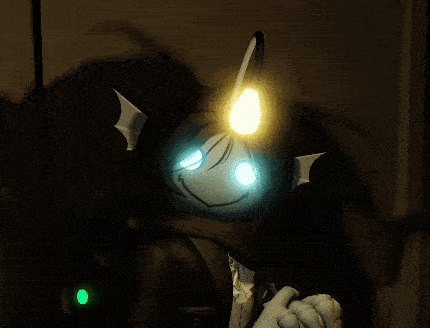

Goal:Cel:
App support for ADHD/ASD and BA thesis defense (researching attitudes of neurotypical vs. neurodivergent individuals towards AI).
Aplikacja wspierająca osoby z ADHD/ASD oraz obrona pracy licencjackiej (badanie postaw osób neurotypowych i neuroatypowych wobec AI).
Status:Status:
In progress. Requires high mana consumption.
W toku. Wymaga wysokiego zużycia many.
Goal:Cel:
E-consultations and tech support for villagers (neighbors).
E-konsultacje i wsparcie technologiczne dla osadników (sąsiadów).
Reward:Nagroda:
Local guild reputation (+10), Gratitude.
Reputacja w lokalnej gildii (+10), Wdzięczność.
Goal:Cel:
Amica Oven repair (Hardware Debugging).
Naprawa piekarnika Amica (Debugowanie Sprzętu).
Warning:Ostrzeżenie:
Risk of fire damage. Screwdriver required.
Ryzyko obrażeń od ognia. Wymagany śrubokręt.